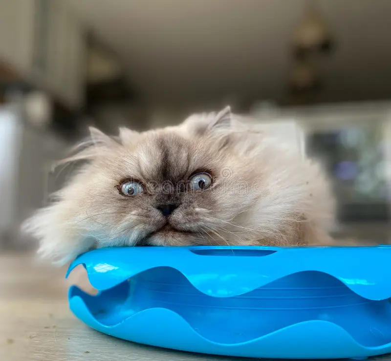
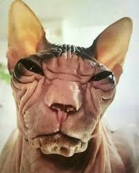

Gatos gatos y más gatos
Nuestro top 3 de nombres favoritos de gatos:
1. GatoGordo
2. Gatencio
3. Firulais
Tipos de gatos:
* Gato negro:
* Gato persa: 
* Gato egipcio: 
Menciones honoríficas:
* Koko: